Enter the access code to continue.
Loading...
A running log of pitfalls and conversion opportunities across purchase funnel experiences. Each frame (or set of frames) reviewed adds 3 slides: Screen, Pitfalls, Opportunities.
Customer is at a merchant's checkout (e.g. Best Buy) and taps "Pay with Zip." This modal opens showing the available payment plans before they commit to a plan and continue checkout.
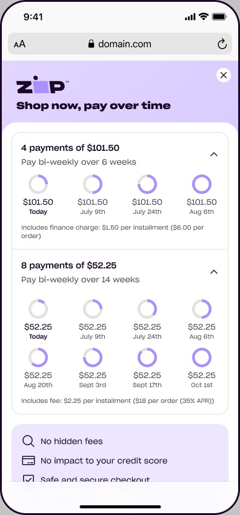
| Element | Original | Improved | Why |
|---|---|---|---|
| 8-pay fee disclosure line | "Includes fee: $2.25 per installment ($18 per order (35% APR))" | "Includes fee: $2.25 per installment — $18 total, 35% APR" | Double-nested parentheses are hard to parse at a glance. The 4-pay line right above it uses a single, clean parenthetical — this fix also makes the two options' fee copy consistent with each other. |
Full "Spending Power" screen has many components (balance, CLI tracker, banner, info links), but the audit focus is the 2 card rows up top — Online virtual card and In-store card — since those are the key items in the purchase funnel.
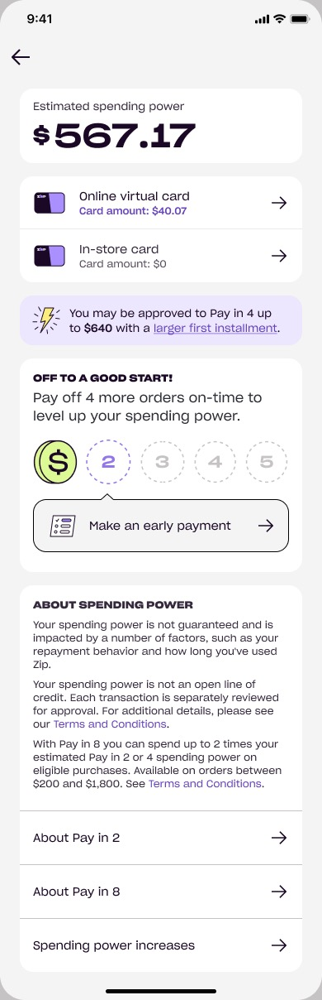
| Element | Original | Improved | Why |
|---|---|---|---|
| "Larger first installment" link | "...up to $640 with a larger first installment." | "...up to $640 by paying more upfront on your first installment." | The original names a mechanism without explaining it — the user has to tap through to learn what it means. The rewrite states the trade-off plainly (pay more now, unlock more spending power) so the value is clear before tapping. This exact phrase recurs at Screens 5 and 7 — same fix applies each time. |
A customer taps into Spending Power because they want to know what they can actually do right now — afford a specific item, decide whether to check out, or just see what's possible. Today the screen mostly hands back an abstract number, two card balances, and a future-oriented growth mechanic (CLI tracker). None of it closes the loop back to "so what can I buy."
Sequence to the previous screen — this is where users land after tapping the Online Virtual Card row. Meant to be the card they use "as their payment method when shopping online," but it visually feels like a dead end with no clear path to actually go spend it.
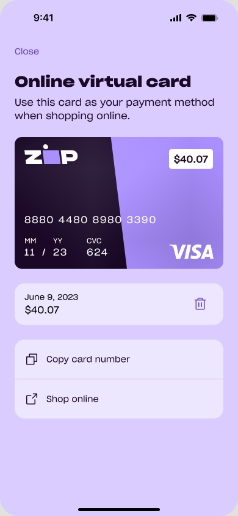
| Element | Original | Improved | Why |
|---|---|---|---|
| Transaction row | "June 9, 2023" / "$40.07" (no label at all) | "Available until June 9, 2023" / "$40.07" | Two floating numbers with zero label copy force the user to guess what the date represents (issued? expires?). One short phrase resolves the ambiguity completely — this is a missing-copy gap, not a wording-quality one. |
User searches "Amazon," taps the autofill result, and lands on Amazon's site inside the Zip app. The moment they arrive, Frame 1 ("Shopping at Amazon") appears. Tapping "Shop [Amazon]" leads to Frame 2, asking how much they want to spend. Tapping "Set up your virtual card" in Frame 1 takes them elsewhere.
(1) User doesn't know what they'll shop for yet. (2) Feels like the wrong time to ask for a spend amount. (3) Setting up the virtual card right now, at first arrival, may pull users away from their actual goal before they even know what they want.
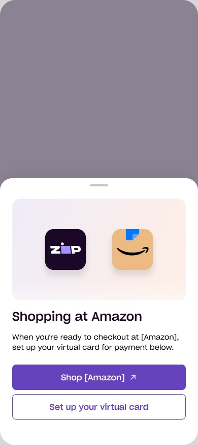
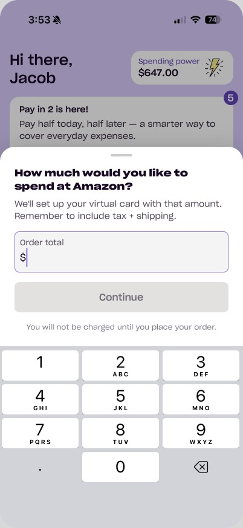
Triggered when a customer has an active Purchase Request (PR) but wasn't just navigating a merchant — Zip proactively checks in. "Yes, I completed this purchase" sets the PR to 'pending' and hides it, then returns the user to the merchant webview — now in its "no active VC" state, with a persistent "Pay with Zip" button in the bottom toolbar. "No, I never spent it" triggers the second frame, which resurfaces the virtual card webview.
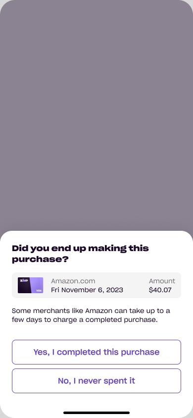
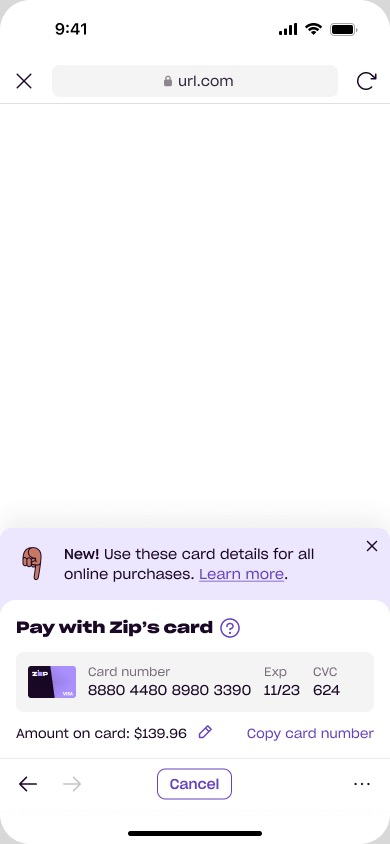
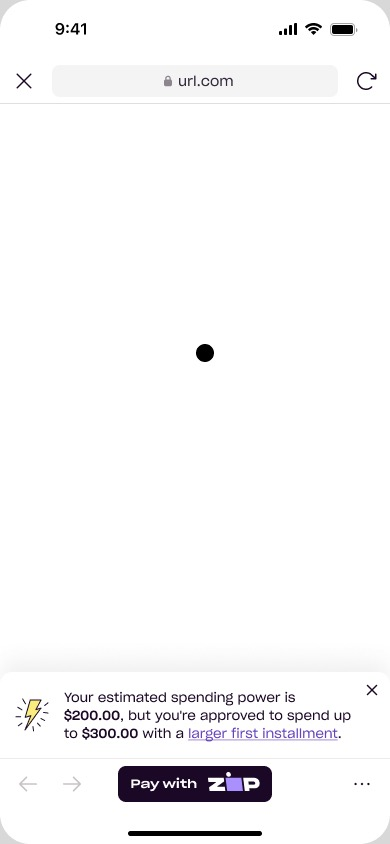
After confirming "Yes," the PR closes and the merchant webview reverts to its no-active-card state — a persistent bottom toolbar with a "Pay with Zip" button, inviting a new purchase during the same browsing session. Analysis focus is this button and what happens after tapping it. The ESP banner above it is out of scope here — already covered in Screen 2.
After a customer sets the amount on a PR, they choose how to pay it. The question driving this audit isn't just function/interaction — is this the best available approach? What's missing? Should it be more illustrative, more descriptive, reflect the actual purchase, be more brandable? Does it give users a sense of ease and continuity in choosing their plan?
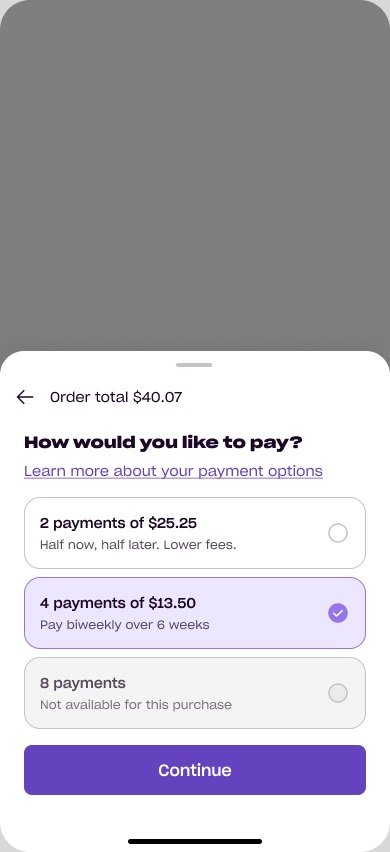
| Element | Original | Improved | Why |
|---|---|---|---|
| 4-payment (default) description | "Pay biweekly over 6 weeks" | "Pay biweekly over 6 weeks — our most balanced option" | The 2-payment option states a benefit ("Lower fees"); the pre-selected default states none, just mechanics. Giving the default the same benefit-oriented register keeps copy consistent across all choices in the same list, and reinforces why it's the recommended one. |
Dedicated bottom-nav tab for in-store payment. Full screen is in scope, but the CBT Purchase Funnel focus is what happens when the user taps "Pay in-store."
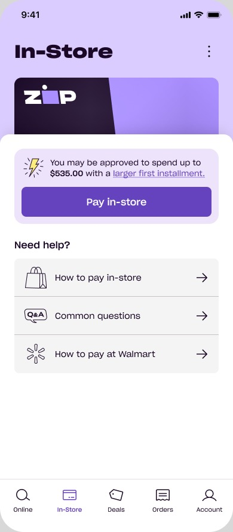
This exact card graphic is the shared asset behind the Online Virtual Card detail, the Fallback modal, and this In-Store tab. Jobs-to-be-done framing: functional (give me what I need to actually pay), identification (tell me which card/context I'm in), emotional (make me confident this is really my Zip card, ready to use).
Educational modal for an experiment letting users set up an in-store virtual card before they know their order total — choosing "not sure" instead, then reconciling installments to the final amount after purchase.
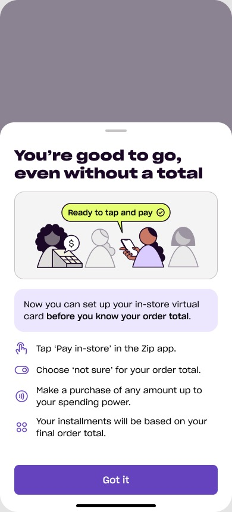
Suggest an addition